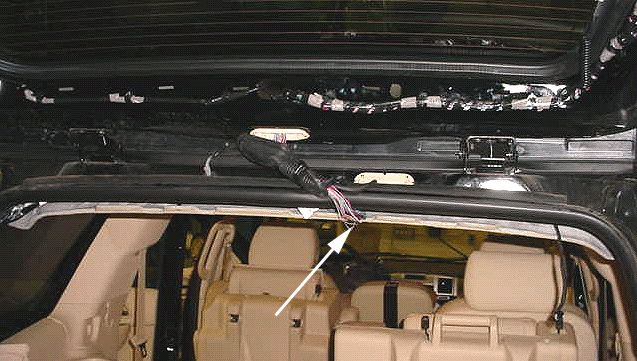
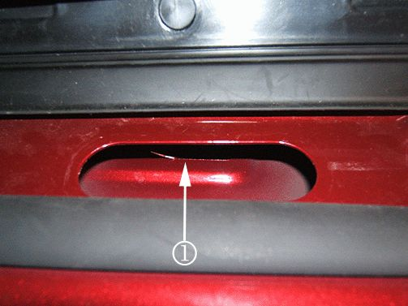
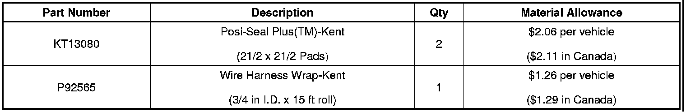

Body - Power Liftgate Opens Part Way Then Reverses
TECHNICALBulletin No.: 07-08-47-005B
Date: April 28, 2009
Subject: Power Liftgate May Open or Close About a Third of the Way Then Reverses, DTCs B153B, B153E and/or B153F Set (Inspect Liftgate Wiring Harness and Repair as Necessary)
Models:
2007-2009 Cadillac Escalade, Escalade ESV
2007-2009 Chevrolet Suburban, Tahoe
2007-2009 GMC Yukon, Yukon Denali, Yukon XL, Yukon Denali XL
with Power Lift Gate (RPO E61)
Supercede:
This bulletin is being revised to change the diagnostic code information. Please discard Corporate Bulletin Number 07-08-47-005A (Section 08 - Body and Accessories).
Condition
Some customers may comment that the power liftgate opens about a third of the way and then reverses to the closed position. Other customers may comment that when the power liftgate is open, the liftgate starts to close about a third of the way and then reopens. The technician may find diagnostic trouble codes (DTCs) B153B-Liftgate Open Switch Signal Circuit, B153E-Liftgate Position Sensor Signal Circuit and/or B153F-Liftgate Object Sensor Signal Circuit set.
Cause
The cause may be a sharp sheet metal edge inside the inner roof panel chafing the liftgate wiring harness.
Correction
Inspect the liftgate wiring harness and repair as necessary using the steps below.
1. Verify the condition and check for any DTCs.
2. Remove the rear door upper garnish molding and retainers. Refer to Rear Door Upper Garnish Molding Replacement in SI.
3. Remove the headliner push retainers.
Important
Do not fold or crease the headliner panel.
4. Slightly pull down on the center of the headliner panel.
5. Locate connector C405/X405, which is a light gray 22-way connector located under the center of the rear headliner panel.
Tip
Use a shop towel when disconnecting the rear washer hose to help absorb any washer fluid that may leak.
6. Disconnect the C405/X405 connector and the rear wiper washer hose.
7. Remove the wiring harness pass through retainer, wiring harness, C405/X405 connector and the washer hose from the roof panel.

8. Visually inspect the liftgate wiring harness as shown above and repair any damaged wires. Refer to Wiring Repairs in SI.
Important
After repairing the wires, wrap the wiring harness with electrical tape and install conduit.
9. Install a piece of Kent-P92565, wire harness wrap 18 mm (3/4 in) inside diameter (I.D.) by 145 mm (53/4 in) length or equivalent flexible conduit to the liftgate wiring harness.

10. Install two pieces of Kent-KT13080, Posi-Seal Plus(TM) or equivalent of electrical moisture sealant pad to the lower inner flange (1) inside the roof panel.
11. Install the liftgate connector C405/X405, wiring harness and the rear washer wiper hose back through the roof panel.
12. Connect the C405/X405 connector, the rear wiper washer hose and seat the wiring harness pass through retainer.
13. Clear any DTCs.
14. Open and close the power rear liftgate ten complete cycles.
15. Install the headliner push retainers.
16. Install the rear door upper garnish molding.
17. Verify that the condition has been fixed.
Parts Information
Order Kent*-KT13080, Posi-Seal Plus(TM) and P92565, Wire Harness Wrap from Kent Automotive at 1-888-YES-KENT or online at www.kent-automotive.com.
*We believe this source and their products to be reliable. There may be additional manufacturers of such products/material. General Motors does not endorse, indicate any preference for or assume any responsibility for the products or material from this firm or for any such items that may be available from other sources.

Warranty Information
For vehicles repaired under warranty, use the table above.

Disclaimer